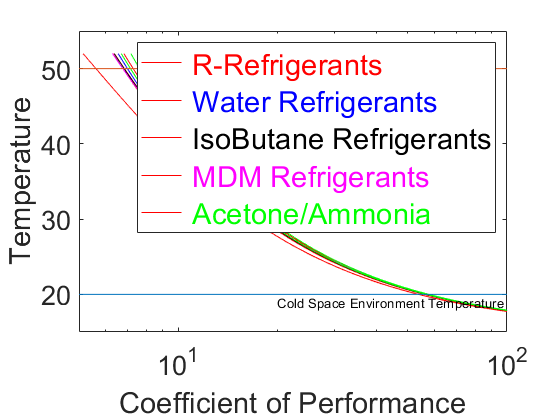
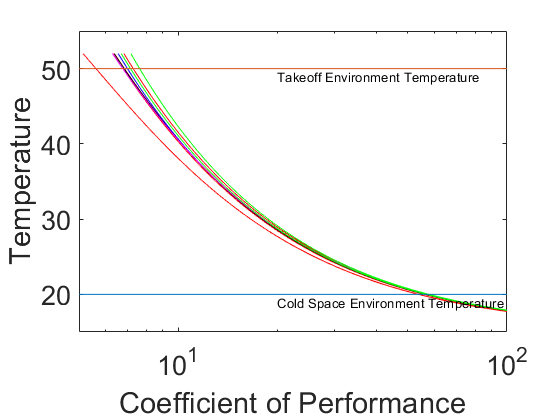
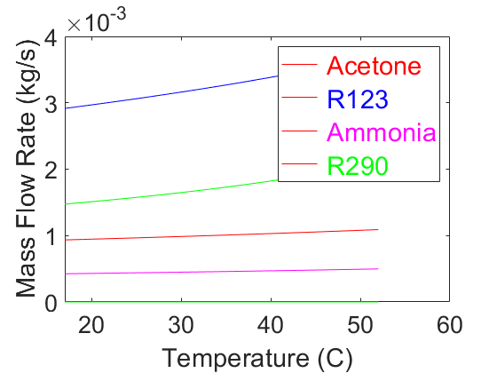
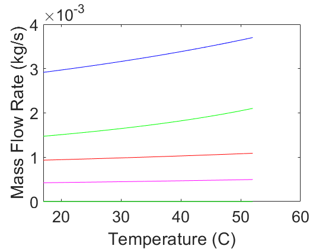
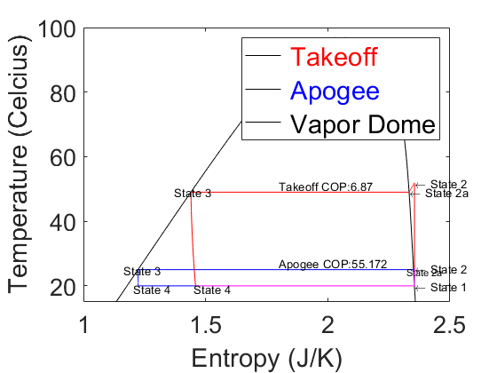
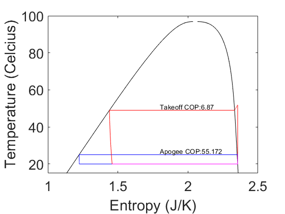
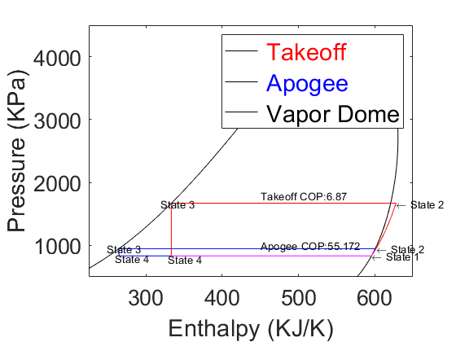
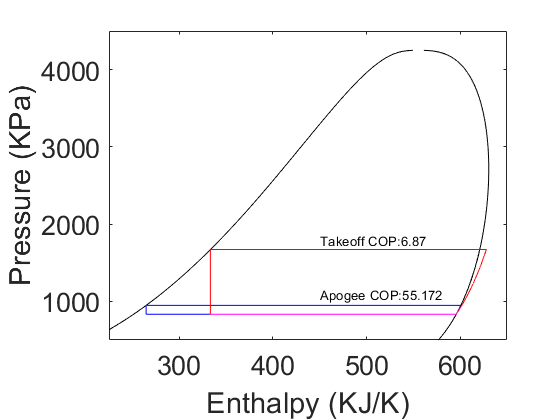
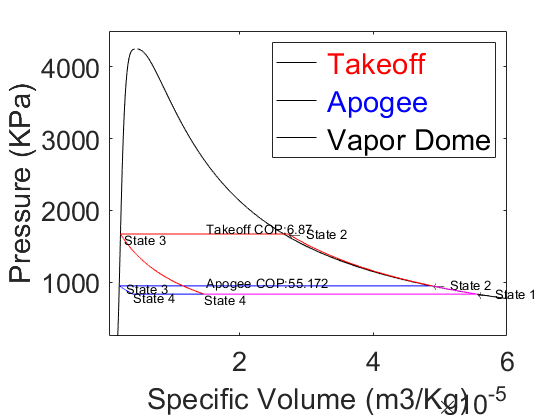
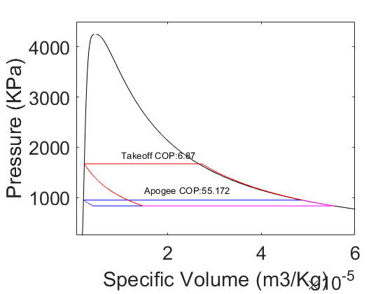

Contents
clear all; close all
clc;
Working_Fluid_1 = {'R410a'};
Working_Fluid_2 = {'R290'};
Working_Fluid_3 = {'Ammonia'};
Working_Fluid_4 = {'Water'};
Working_Fluid_5 = {'R22'};
Working_Fluid_6 = {'R114'};
Working_Fluid_7 = {'IsoButane'};
Working_Fluid_8 = {'MDM'};
Working_Fluid_9 = {'R12'};
Working_Fluid_10 = {'R143a'};
Working_Fluid_11 = {'R123'};
Working_Fluid_12 = {'Acetone'};
Working_Fluid_13 = {'R404a'};
Working_Fluid_14 = {'R125'};
Working_Fluid_15 = {'R134a'};
Working_Fluids = [Working_Fluid_1,Working_Fluid_2,Working_Fluid_3,Working_Fluid_4,Working_Fluid_5,Working_Fluid_6,Working_Fluid_7,...
Working_Fluid_8,Working_Fluid_9,Working_Fluid_10,Working_Fluid_11,Working_Fluid_12,Working_Fluid_13,Working_Fluid_14,Working_Fluid_15];
Outside_Temperature = linspace(273 + 18 - 1, 273 + 50 + 2, 1000);
COP_R410a = zeros(1000);
COP_R290 = zeros(1000);
COP_Ammonia = zeros(1000);
COP_Water = zeros(1000);
COP_R22 = zeros(1000);
COP_R114 = zeros(1000);
COP_IsoButane = zeros(1000);
COP_MDM = zeros(1000);
COP_R12 = zeros(1000);
COP_R143a = zeros(1000);
COP_R123 = zeros(1000);
COP_Acetone = zeros(1000);
COP_R404a = zeros(1000);
COP_R125 = zeros(1000);
COP_R134a = zeros(1000);
MFR_R410a = zeros(1000);
MFR_R290 = zeros(1000);
MFR_Ammonia = zeros(1000);
MFR_Water = zeros(1000);
MFR_R22 = zeros(1000);
MFR_R114 = zeros(1000);
MFR_IsoButane = zeros(1000);
MFR_MDM = zeros(1000);
MFR_R12 = zeros(1000);
MFR_R143a = zeros(1000);
MFR_R123 = zeros(1000);
MFR_Acetone = zeros(1000);
MFR_R404a = zeros(1000);
MFR_R125 = zeros(1000);
MFR_R134a = zeros(1000);
j=1;
for i = Working_Fluids
k=1;
for temps = Outside_Temperature
Working_Fluid_1 = Working_Fluids{j};
Cold_Space = 273+20;
Q_1 = 1;
T_1 = Cold_Space;
P_1 = CoolProp.PropsSI('P', 'T', T_1, 'Q', Q_1, Working_Fluid_1);
H_1 = CoolProp.PropsSI('H', 'T', T_1, 'Q', Q_1, Working_Fluid_1);
U_1 = CoolProp.PropsSI('U', 'T', T_1, 'Q', Q_1, Working_Fluid_1);
S_1 = CoolProp.PropsSI('S', 'T', T_1, 'Q', Q_1, Working_Fluid_1);
V_1 = 1/CoolProp.PropsSI('D', 'T', T_1, 'Q', Q_1, Working_Fluid_1);
Q_3 = 0;
T_3_Summer = temps + 5;
P_3_Summer = CoolProp.PropsSI('P', 'T', T_3_Summer, 'Q', Q_3, Working_Fluid_1);
H_3_Summer = CoolProp.PropsSI('H', 'T', T_3_Summer, 'Q', Q_3, Working_Fluid_1);
U_3_Summer = CoolProp.PropsSI('U', 'T', T_3_Summer, 'Q', Q_3, Working_Fluid_1);
S_3_Summer = CoolProp.PropsSI('S', 'T', T_3_Summer, 'Q', Q_3, Working_Fluid_1);
V_3_Summer = 1/CoolProp.PropsSI('D', 'T', T_3_Summer, 'Q', Q_3, Working_Fluid_1);
S_2_Summer = S_1;
P_2_Summer = P_3_Summer;
T_2_Summer = CoolProp.PropsSI('T', 'P', P_2_Summer, 'S', S_2_Summer, Working_Fluid_1);
H_2_Summer = CoolProp.PropsSI('H', 'P', P_2_Summer, 'S', S_2_Summer, Working_Fluid_1);
U_2_Summer = CoolProp.PropsSI('U', 'P', P_2_Summer, 'S', S_2_Summer, Working_Fluid_1);
V_2_Summer = 1/CoolProp.PropsSI('D', 'P', P_2_Summer, 'S', S_2_Summer, Working_Fluid_1);
Q_2a=1;
P_2a_Summer = P_2_Summer;
T_2a_Summer = T_3_Summer;
S_2a_Summer = CoolProp.PropsSI('S', 'P', P_2a_Summer, 'Q', Q_2a, Working_Fluid_1);
H_2a_Summer = CoolProp.PropsSI('H', 'P', P_2a_Summer, 'Q', Q_2a, Working_Fluid_1);
U_2a_Summer = CoolProp.PropsSI('U', 'P', P_2a_Summer, 'Q', Q_2a, Working_Fluid_1);
V_2a_Summer = 1/CoolProp.PropsSI('D', 'P', P_2a_Summer, 'Q', Q_2a, Working_Fluid_1);
T_4 = T_1;
H_4_Summer = H_3_Summer;
P_4_Summer = P_1;
U_4_Summer = CoolProp.PropsSI('U', 'P', P_4_Summer, 'H', H_4_Summer, Working_Fluid_1);
S_4_Summer = CoolProp.PropsSI('S', 'P', P_4_Summer, 'H', H_4_Summer, Working_Fluid_1);
V_4_Summer = 1/CoolProp.PropsSI('D', 'P', P_4_Summer, 'H', H_4_Summer, Working_Fluid_1);
COP_Summer = (H_1 - H_4_Summer)/(H_2_Summer - H_1);
dH_Evaporator_Summer = H_1 - H_4_Summer;
Cooling_Capacity = 500;
Mass_Flow_Rate_Summer = Cooling_Capacity / dH_Evaporator_Summer;
Compressor_Power_Summer = Mass_Flow_Rate_Summer * (H_2_Summer - H_1);
if j == 1
COP_R410a(k) = COP_Summer;
MFR_R410a(k) = Mass_Flow_Rate_Summer;
elseif j == 2
COP_R290(k) = COP_Summer;
MFR_R290(k) = Mass_Flow_Rate_Summer;
elseif j == 3
COP_Ammonia(k) = COP_Summer;
MFR_Ammonia(k) = Mass_Flow_Rate_Summer;
elseif j == 4
COP_Water(k) = COP_Summer;
MFR_Water(k) = Mass_Flow_Rate_Summer;
elseif j == 5
COP_R22(k) = COP_Summer;
MFR_R22(k) = Mass_Flow_Rate_Summer;
elseif j == 6
COP_R114(k) = COP_Summer;
MFR_R114(k) = Mass_Flow_Rate_Summer;
elseif j == 7
COP_IsoButane(k) = COP_Summer;
MFR_IsoButane(k) = Mass_Flow_Rate_Summer;
elseif j == 8
COP_MDM(k) = COP_Summer;
MFR_MDM(k) = Mass_Flow_Rate_Summer;
elseif j == 9
COP_R12(k) = COP_Summer;
MFR_R12(k) = Mass_Flow_Rate_Summer;
elseif j == 10
COP_R143a(k) = COP_Summer;
MFR_R143a(k) = Mass_Flow_Rate_Summer;
elseif j == 11
COP_R123(k) = COP_Summer;
MFR_R123(k) = Mass_Flow_Rate_Summer;
elseif j == 12
COP_Acetone(k) = COP_Summer;
MFR_Acetone(k) = Mass_Flow_Rate_Summer;
elseif j == 13
COP_R404a(k) = COP_Summer;
MFR_R404a(k) = Mass_Flow_Rate_Summer;
elseif j == 14
COP_R125(k) = COP_Summer;
MFR_R125(k) = Mass_Flow_Rate_Summer;
else
COP_R134a(k) = COP_Summer;
MFR_R134a(k) = Mass_Flow_Rate_Summer;
end
k=k+1;
end
j=j+1;
end
for pos = 1:1000
COP_R410a(pos) = abs(COP_R410a(pos));
COP_R290(pos) = abs(COP_R290(pos));
COP_Ammonia(pos) = abs(COP_Ammonia(pos));
COP_Water(pos) = abs(COP_Water(pos));
COP_R22(pos) = abs(COP_R22(pos));
COP_R114(pos) = abs(COP_R114(pos));
COP_IsoButane(pos) = abs(COP_IsoButane(pos));
COP_MDM(pos) = abs(COP_MDM(pos));
COP_R12(pos) = abs(COP_R12(pos));
COP_R143a(pos) = abs(COP_R143a(pos));
COP_R123(pos) = abs(COP_R123(pos));
COP_Acetone(pos) = abs(COP_Acetone(pos));
COP_R404a(pos) = abs(COP_R404a(pos));
COP_R125(pos) = abs(COP_R125(pos));
COP_R134a(pos) = abs(COP_R134a(pos));
end
figure(1)
semilogx(COP_R410a,Outside_Temperature-273,'r',COP_R290,Outside_Temperature-273,'r')
semilogx(COP_R404a,Outside_Temperature-273,'r',COP_R125,Outside_Temperature-273,'r',COP_R134a,Outside_Temperature-273,'r',COP_R22,Outside_Temperature-273,'r')
semilogx(COP_R123,Outside_Temperature-273,'r',COP_R12,Outside_Temperature-273,'r',COP_R143a,Outside_Temperature-273,'r',COP_R114,Outside_Temperature-273,'r')
hold on
semilogx(COP_Water,Outside_Temperature-273,'b')
semilogx(COP_IsoButane,Outside_Temperature-273,'k')
semilogx(COP_MDM,Outside_Temperature-273,'m')
semilogx(COP_Acetone,Outside_Temperature-273,'g',COP_Ammonia,Outside_Temperature-273,'g')
plot([5,100],[20,20],[5,150],[50,50])
hold off
text(20,49,'Takeoff Environment Temperature')
text(20,19,'Cold Space Environment Temperature')
xlabel('Coefficient of Performance','FontSize',22)
set(gca,'fontsize',20)
ylabel('Temperature','FontSize',22)
set(gca,'fontsize',20)
xlim([5 100])
ylim([15 55])
lgd = legend('\color{red} R-Refrigerants','\color{blue} Water Refrigerants','\color{black} IsoButane Refrigerants','\color{magenta} MDM Refrigerants','\color{green} Acetone/Ammonia');
lgd.FontSize = 22;
hold off
figure(2)
semilogx(COP_R410a,Outside_Temperature-273,'r',COP_R290,Outside_Temperature-273,'r')
semilogx(COP_R404a,Outside_Temperature-273,'r',COP_R125,Outside_Temperature-273,'r',COP_R134a,Outside_Temperature-273,'r',COP_R22,Outside_Temperature-273,'r')
semilogx(COP_R123,Outside_Temperature-273,'r',COP_R12,Outside_Temperature-273,'r',COP_R143a,Outside_Temperature-273,'r',COP_R114,Outside_Temperature-273,'r')
hold on
semilogx(COP_Water,Outside_Temperature-273,'b')
semilogx(COP_IsoButane,Outside_Temperature-273,'k')
semilogx(COP_MDM,Outside_Temperature-273,'m')
semilogx(COP_Acetone,Outside_Temperature-273,'g',COP_Ammonia,Outside_Temperature-273,'g')
plot([5,100],[20,20],[5,150],[50,50])
hold off
text(20,49,'Takeoff Environment Temperature')
text(20,19,'Cold Space Environment Temperature')
xlabel('Coefficient of Performance','FontSize',22)
set(gca,'fontsize',20)
ylabel('Temperature','FontSize',22)
set(gca,'fontsize',20)
xlim([5 100])
ylim([15 55])
hold off
COP_R410a_Max = COP_R410a(915);
COP_R290_Max = COP_R290(915);
COP_Ammonia_Max = COP_Ammonia(915);
COP_Water_Max = COP_Water(915);
COP_R22_Max = COP_R22(915);
COP_R114_Max = COP_R114(915);
COP_IsoButane_Max = COP_IsoButane(915);
COP_MDM_Max = COP_MDM(915);
COP_R12_Max = COP_R12(915);
COP_R143a_Max = COP_R143a(915);
COP_R123_Max = COP_R123(915);
COP_Acetone_Max = COP_Acetone(915);
COP_R404a_Max = COP_R404a(915);
COP_R125_Max = COP_R125(915);
COP_R134a_Max = COP_R134a(915);
COP_TakeOff_Sorted =sortrows({COP_R410a_Max,'R410a';COP_R290_Max,'R290';COP_Ammonia_Max,'Ammonia';COP_Water_Max,'Water';COP_R22_Max,'R22';COP_R114_Max,'R114';...
COP_IsoButane_Max,'IsoButane';COP_MDM_Max,'MDM';COP_R12_Max,'R12';COP_R143a_Max,'R143a';COP_R123_Max,'R123';COP_Acetone_Max,'Acetone';COP_R404a_Max,'R404a';COP_R125_Max,'R125';COP_R134a_Max,'R125'},1);
figure(3)
plot(Outside_Temperature-273,MFR_Acetone,'r',Outside_Temperature-273,MFR_R123,'b',Outside_Temperature-273,MFR_Ammonia,'m',Outside_Temperature-273,MFR_R290,'g')
xlabel('Temperature (C)','FontSize',22)
set(gca,'fontsize',20)
ylabel('Mass Flow Rate (kg/s)','FontSize',22)
set(gca,'fontsize',20)
lgd = legend('\color{red} Acetone','\color{blue} R123','\color{magenta} Ammonia','\color{green} R290');
lgd.FontSize = 22;
hold off
figure(4)
plot(Outside_Temperature-273,MFR_Acetone,'r',Outside_Temperature-273,MFR_R123,'b',Outside_Temperature-273,MFR_Ammonia,'m',Outside_Temperature-273,MFR_R290,'g')
xlabel('Temperature (C)','FontSize',22)
set(gca,'fontsize',20)
ylabel('Mass Flow Rate (kg/s)','FontSize',22)
set(gca,'fontsize',20)
hold off
Working_Fluid_1 = {'R290'};
Working_Fluid_1 = Working_Fluid_1{1};
Max_Pressure = 4250000;
Cold_Space = 273+20;
Hot_Space_Liftoff = 273 + 49;
Cold_Space_Apogee = 273 - 18;
Summer is used to refer to Liftoff, and Winter is for Apogee %%%
Q_1 = 1;
T_1 = Cold_Space;
P_1 = CoolProp.PropsSI('P', 'T', T_1, 'Q', Q_1, Working_Fluid_1);
H_1 = CoolProp.PropsSI('H', 'T', T_1, 'Q', Q_1, Working_Fluid_1);
U_1 = CoolProp.PropsSI('U', 'T', T_1, 'Q', Q_1, Working_Fluid_1);
S_1 = CoolProp.PropsSI('S', 'T', T_1, 'Q', Q_1, Working_Fluid_1);
V_1 = 1/CoolProp.PropsSI('D', 'T', T_1, 'Q', Q_1, Working_Fluid_1);
Q_1_Apogee = 1;
T_1_Apogee = Cold_Space;
P_1_Apogee = CoolProp.PropsSI('P', 'T', T_1_Apogee, 'Q', Q_1, Working_Fluid_1);
H_1_Apogee = CoolProp.PropsSI('H', 'T', T_1_Apogee, 'Q', Q_1, Working_Fluid_1);
U_1_Apogee = CoolProp.PropsSI('U', 'T', T_1_Apogee, 'Q', Q_1, Working_Fluid_1);
S_1_Apogee = CoolProp.PropsSI('S', 'T', T_1_Apogee, 'Q', Q_1, Working_Fluid_1);
V_1_Apogee = 1/CoolProp.PropsSI('D', 'T', T_1_Apogee, 'Q', Q_1, Working_Fluid_1);
Q_3 = 0;
T_3_Summer = Hot_Space_Liftoff;
P_3_Summer = CoolProp.PropsSI('P', 'T', T_3_Summer, 'Q', Q_3, Working_Fluid_1);
H_3_Summer = CoolProp.PropsSI('H', 'T', T_3_Summer, 'Q', Q_3, Working_Fluid_1);
U_3_Summer = CoolProp.PropsSI('U', 'T', T_3_Summer, 'Q', Q_3, Working_Fluid_1);
S_3_Summer = CoolProp.PropsSI('S', 'T', T_3_Summer, 'Q', Q_3, Working_Fluid_1);
V_3_Summer = 1/CoolProp.PropsSI('D', 'T', T_3_Summer, 'Q', Q_3, Working_Fluid_1);
T_3_Winter = Cold_Space + 5;
P_3_Winter = CoolProp.PropsSI('P', 'T', T_3_Winter, 'Q', Q_3, Working_Fluid_1);
H_3_Winter = CoolProp.PropsSI('H', 'T', T_3_Winter, 'Q', Q_3, Working_Fluid_1);
U_3_Winter = CoolProp.PropsSI('U', 'T', T_3_Winter, 'Q', Q_3, Working_Fluid_1);
S_3_Winter = CoolProp.PropsSI('S', 'T', T_3_Winter, 'Q', Q_3, Working_Fluid_1);
V_3_Winter = 1/CoolProp.PropsSI('D', 'T', T_3_Winter, 'Q', Q_3, Working_Fluid_1);
S_2_Summer = S_1;
P_2_Summer = P_3_Summer;
T_2_Summer = CoolProp.PropsSI('T', 'P', P_2_Summer, 'S', S_2_Summer, Working_Fluid_1);
H_2_Summer = CoolProp.PropsSI('H', 'P', P_2_Summer, 'S', S_2_Summer, Working_Fluid_1);
U_2_Summer = CoolProp.PropsSI('U', 'P', P_2_Summer, 'S', S_2_Summer, Working_Fluid_1);
V_2_Summer = 1/CoolProp.PropsSI('D', 'P', P_2_Summer, 'S', S_2_Summer, Working_Fluid_1);
P_2_Winter = P_3_Winter;
S_2_Winter = S_1_Apogee;
T_2_Winter = CoolProp.PropsSI('T', 'P', P_2_Winter, 'S', S_2_Winter, Working_Fluid_1);
H_2_Winter = CoolProp.PropsSI('H', 'P', P_2_Winter, 'S', S_2_Winter, Working_Fluid_1);
U_2_Winter = CoolProp.PropsSI('U', 'P', P_2_Winter, 'S', S_2_Winter, Working_Fluid_1);
V_2_Winter = 1/CoolProp.PropsSI('D', 'P', P_2_Winter, 'S', S_2_Winter, Working_Fluid_1);
Q_2a=1;
P_2a_Summer = P_2_Summer;
T_2a_Summer = T_3_Summer;
S_2a_Summer = CoolProp.PropsSI('S', 'P', P_2a_Summer, 'Q', Q_2a, Working_Fluid_1);
H_2a_Summer = CoolProp.PropsSI('H', 'P', P_2a_Summer, 'Q', Q_2a, Working_Fluid_1);
U_2a_Summer = CoolProp.PropsSI('U', 'P', P_2a_Summer, 'Q', Q_2a, Working_Fluid_1);
V_2a_Summer = 1/CoolProp.PropsSI('D', 'P', P_2a_Summer, 'Q', Q_2a, Working_Fluid_1);
P_2a_Winter = P_2_Winter;
T_2a_Winter = T_3_Winter;
S_2a_Winter = CoolProp.PropsSI('S', 'P', P_2a_Winter, 'Q', Q_2a, Working_Fluid_1);
H_2a_Winter = CoolProp.PropsSI('H', 'P', P_2a_Winter, 'Q', Q_2a, Working_Fluid_1);
U_2a_Winter = CoolProp.PropsSI('U', 'P', P_2a_Winter, 'Q', Q_2a, Working_Fluid_1);
V_2a_Winter = 1/CoolProp.PropsSI('D', 'P', P_2a_Winter, 'Q', Q_2a, Working_Fluid_1);
T_4 = T_1;
H_4_Summer = H_3_Summer;
P_4_Summer = P_1;
U_4_Summer = CoolProp.PropsSI('U', 'P', P_4_Summer, 'H', H_4_Summer, Working_Fluid_1);
S_4_Summer = CoolProp.PropsSI('S', 'P', P_4_Summer, 'H', H_4_Summer, Working_Fluid_1);
V_4_Summer = 1/CoolProp.PropsSI('D', 'P', P_4_Summer, 'H', H_4_Summer, Working_Fluid_1);
T_4_Winter = T_1_Apogee;
H_4_Winter = H_3_Winter;
P_4_Winter = P_1_Apogee;
U_4_Winter = CoolProp.PropsSI('U', 'P', P_4_Winter, 'H', H_4_Winter, Working_Fluid_1);
S_4_Winter = CoolProp.PropsSI('S', 'P', P_4_Winter, 'H', H_4_Winter, Working_Fluid_1);
V_4_Winter = 1/CoolProp.PropsSI('D', 'P', P_4_Winter, 'H', H_4_Winter, Working_Fluid_1);
Q_SL = 0;
Q_SV = 1;
P_SL_SV = linspace(100000,Max_Pressure,1000);
T_SL = zeros(length(P_SL_SV));
S_SL = zeros(length(P_SL_SV));
H_SL = zeros(length(P_SL_SV));
V_SL = zeros(length(P_SL_SV));
T_SV = zeros(length(P_SL_SV));
S_SV = zeros(length(P_SL_SV));
H_SV = zeros(length(P_SL_SV));
V_SV = zeros(length(P_SL_SV));
for index=1:1000
T_SL(index) = CoolProp.PropsSI('T', 'P', P_SL_SV(index), 'Q', Q_SL, Working_Fluid_1) -273;
S_SL(index) = CoolProp.PropsSI('S', 'P', P_SL_SV(index), 'Q', Q_SL, Working_Fluid_1);
H_SL(index) = CoolProp.PropsSI('H', 'P', P_SL_SV(index), 'Q', Q_SL, Working_Fluid_1);
V_SL(index) = 1/CoolProp.PropsSI('D','P',P_SL_SV(index), 'Q', Q_SL, Working_Fluid_1);
T_SV(index) = CoolProp.PropsSI('T', 'P', P_SL_SV(index), 'Q', Q_SV, Working_Fluid_1) -273;
S_SV(index) = CoolProp.PropsSI('S', 'P', P_SL_SV(index), 'Q', Q_SV, Working_Fluid_1);
H_SV(index) = CoolProp.PropsSI('H', 'P', P_SL_SV(index), 'Q', Q_SV, Working_Fluid_1);
V_SV(index) = 1/CoolProp.PropsSI('D','P',P_SL_SV(index), 'Q', Q_SV, Working_Fluid_1);
end
S_Compressor_Liftoff = S_1;
S_Compressor_Apogee = S_1_Apogee;
P_Compressor_Summer = linspace(P_1,P_2_Summer,1000);
P_Compressor_Winter = linspace(P_1_Apogee,P_2_Winter,1000);
T_Compressor_Summer = zeros(length(P_Compressor_Summer));
T_Compressor_Winter = zeros(length(P_Compressor_Summer));
S_Compressor_Summer = zeros(length(P_Compressor_Summer));
S_Compressor_Winter = zeros(length(P_Compressor_Summer));
H_Compressor_Summer = zeros(length(P_Compressor_Summer));
H_Compressor_Winter = zeros(length(P_Compressor_Summer));
V_Compressor_Summer = zeros(length(P_Compressor_Summer));
V_Compressor_Winter = zeros(length(P_Compressor_Summer));
for index = 1:1000
T_Compressor_Summer(index) = CoolProp.PropsSI('T', 'P', P_Compressor_Summer(index), 'S', S_Compressor_Liftoff, Working_Fluid_1) - 273;
T_Compressor_Winter(index) = CoolProp.PropsSI('T', 'P', P_Compressor_Winter(index), 'S', S_Compressor_Apogee, Working_Fluid_1) - 273;
S_Compressor_Summer(index) = CoolProp.PropsSI('S', 'P', P_Compressor_Summer(index), 'S', S_Compressor_Liftoff, Working_Fluid_1);
S_Compressor_Winter(index) = CoolProp.PropsSI('S', 'P', P_Compressor_Winter(index), 'S', S_Compressor_Apogee, Working_Fluid_1);
H_Compressor_Summer(index) = CoolProp.PropsSI('H', 'P', P_Compressor_Summer(index), 'S', S_Compressor_Liftoff, Working_Fluid_1);
H_Compressor_Winter(index) = CoolProp.PropsSI('H', 'P', P_Compressor_Winter(index), 'S', S_Compressor_Apogee, Working_Fluid_1);
V_Compressor_Summer(index) = 1/CoolProp.PropsSI('D', 'P', P_Compressor_Summer(index), 'S', S_Compressor_Liftoff, Working_Fluid_1);
V_Compressor_Winter(index) = 1/CoolProp.PropsSI('D', 'P', P_Compressor_Winter(index), 'S', S_Compressor_Apogee, Working_Fluid_1);
end
P_Condensor_Summer = P_2_Summer;
P_Condensor_Winter = P_2_Winter;
T_Condensor_Summer = linspace(T_2_Summer,T_2a_Summer+.25,1000);
T_Condensor_Winter = linspace(T_2_Winter,T_2a_Winter+.25,1000);
S_Condensor_Summer = zeros(length(P_Condensor_Summer));
S_Condensor_Winter = zeros(length(P_Condensor_Summer));
H_Condensor_Summer = zeros(length(P_Condensor_Summer));
H_Condensor_Winter = zeros(length(P_Condensor_Summer));
V_Condensor_Summer = zeros(length(P_Condensor_Summer));
V_Condensor_Winter = zeros(length(P_Condensor_Summer));
for index = 1:1000
S_Condensor_Summer(index) = CoolProp.PropsSI('S', 'T', T_Condensor_Summer(index), 'P', P_Condensor_Summer, Working_Fluid_1);
S_Condensor_Winter(index) = CoolProp.PropsSI('S', 'T', T_Condensor_Winter(index), 'P', P_Condensor_Winter, Working_Fluid_1);
H_Condensor_Summer(index) = CoolProp.PropsSI('H', 'T', T_Condensor_Summer(index), 'P', P_Condensor_Summer, Working_Fluid_1);
H_Condensor_Winter(index) = CoolProp.PropsSI('H', 'T', T_Condensor_Winter(index), 'P', P_Condensor_Winter, Working_Fluid_1);
V_Condensor_Summer(index) = 1/CoolProp.PropsSI('D', 'T', T_Condensor_Summer(index), 'P', P_Condensor_Summer, Working_Fluid_1);
V_Condensor_Winter(index) = 1/CoolProp.PropsSI('D', 'T', T_Condensor_Winter(index), 'P', P_Condensor_Winter, Working_Fluid_1);
end
T_Condensora_Summer = [T_2a_Summer,T_3_Summer];
T_Condensora_Winter = [T_2a_Winter,T_3_Winter];
P_Condensora_Summer = [P_2a_Summer,P_3_Summer];
P_Condensora_Winter = [P_2a_Winter,P_3_Winter];
S_Condensora_Summer = [S_2a_Summer,S_3_Summer];
S_Condensora_Winter = [S_2a_Winter,S_3_Winter];
H_Condensora_Summer = [H_2a_Summer,H_3_Summer];
H_Condensora_Winter = [H_2a_Winter,H_3_Winter];
V_Condensora_Summer = [V_2a_Summer,V_3_Summer];
V_Condensora_Winter = [V_2a_Winter,V_3_Winter];
H_Valve_Summer = H_3_Summer;
H_Valve_Winter = H_3_Winter;
P_Valve_Summer = linspace(P_3_Summer,P_4_Summer,1000);
P_Valve_Winter = linspace(P_3_Winter,P_4_Winter,1000);
S_Valve_Summer = zeros(length(P_Valve_Summer));
S_Valve_Winter = zeros(length(P_Valve_Summer));
T_Valve_Summer = zeros(length(P_Valve_Summer));
T_Valve_Winter = zeros(length(P_Valve_Summer));
V_Valve_Summer = zeros(length(P_Valve_Summer));
V_Valve_Winter = zeros(length(P_Valve_Summer));
for index = 1:1000
S_Valve_Summer(index) = CoolProp.PropsSI('S', 'H', H_Valve_Summer, 'P', P_Valve_Summer(index), Working_Fluid_1);
S_Valve_Winter(index) = CoolProp.PropsSI('S', 'H', H_Valve_Winter, 'P', P_Valve_Winter(index), Working_Fluid_1);
T_Valve_Summer(index) = CoolProp.PropsSI('T', 'H', H_Valve_Summer, 'P', P_Valve_Summer(index), Working_Fluid_1);
T_Valve_Winter(index) = CoolProp.PropsSI('T', 'H', H_Valve_Winter, 'P', P_Valve_Winter(index), Working_Fluid_1);
V_Valve_Summer(index) = 1/CoolProp.PropsSI('D', 'H', H_Valve_Summer, 'P', P_Valve_Summer(index), Working_Fluid_1);
V_Valve_Winter(index) = 1/CoolProp.PropsSI('D', 'H', H_Valve_Winter, 'P', P_Valve_Winter(index), Working_Fluid_1);
end
T_Evaporator_Summer = [T_4,T_1];
T_Evaporator_Winter = [T_4_Winter,T_1_Apogee];
P_Evaporator_Summer = [P_4_Summer,P_1];
P_Evaporator_Winter = [P_4_Winter,P_1_Apogee];
S_Evaporator_Summer = [S_4_Summer,S_1];
S_Evaporator_Winter = [S_4_Winter,S_1_Apogee];
H_Evaporator_Summer = [H_4_Summer,H_1];
H_Evaporator_Winter = [H_4_Winter,H_1_Apogee];
V_Evaporator_Summer = [V_4_Summer,V_1];
V_Evaporator_Winter = [V_4_Winter,V_1_Apogee];
COP_Summer = (H_1 - H_4_Summer)/(H_2_Summer - H_1);
COP_Winter = (H_1_Apogee - H_4_Winter)/(H_2_Winter - H_1_Apogee);
figure(5)
plot(S_SL/1000,T_SL,'k',S_SV/1000,T_SV,'k')
hold on
plot(S_Compressor_Winter/1000,T_Compressor_Winter,'b',S_Condensor_Winter/1000, T_Condensor_Winter-273,'b',S_Condensora_Winter/1000, T_Condensora_Winter-273,'b',S_Valve_Winter/1000,T_Valve_Winter-273,'b',S_Evaporator_Winter/1000, T_Evaporator_Winter-273,'b')
text(S_1_Apogee/1000,T_1_Apogee-273, '\leftarrow State 1')
text(S_2_Winter/1000,T_2_Winter-273, '\leftarrow State 2')
text(S_2a_Winter/1000-.03,T_2a_Winter-273-1, 'State 2a','FontSize', 8)
text(S_3_Winter/1000-.06,T_3_Winter-273, 'State 3')
text(S_4_Winter/1000-.02,T_4_Winter-273-1, 'State 4')
text(1.8,27, strcat('Apogee COP: ' , num2str(COP_Winter)))
plot(S_Compressor_Summer/1000,T_Compressor_Summer,'r',S_Condensor_Summer/1000, T_Condensor_Summer-273,'r',S_Condensora_Summer/1000, T_Condensora_Summer-273,'r',S_Valve_Summer/1000,T_Valve_Summer-273,'r',S_Evaporator_Summer/1000, T_Evaporator_Summer-273,'m')
plot(S_Compressor_Winter/1000,T_Compressor_Winter,'m')
text(S_2_Summer/1000,T_2_Summer-273, '\leftarrow State 2')
text(S_2a_Summer/1000,T_2a_Summer-273, '\leftarrow State 2a')
text(S_3_Summer/1000-.07,T_3_Summer-273, 'State 3')
text(S_4_Summer/1000-.01,T_4-273-1, 'State 4')
text(1.8,51, strcat('Takeoff COP: ' , '6.87'))
xlabel('Entropy (J/K)','FontSize',22)
set(gca,'fontsize',20)
ylabel('Temperature (Celcius)','FontSize',22)
set(gca,'fontsize',20)
lgd = legend('\color{red} Takeoff','\color{blue} Apogee','\color{black} Vapor Dome');
lgd.FontSize = 22;
xlim([1 2.5])
ylim([15 100])
hold off
figure(6)
plot(S_SL/1000,T_SL,'k',S_SV/1000,T_SV,'k')
hold on
plot(S_Compressor_Winter/1000,T_Compressor_Winter,'b',S_Condensor_Winter/1000, T_Condensor_Winter-273,'b',S_Condensora_Winter/1000, T_Condensora_Winter-273,'b',S_Valve_Winter/1000,T_Valve_Winter-273,'b',S_Evaporator_Winter/1000, T_Evaporator_Winter-273,'b')
text(1.8,27, strcat('Apogee COP: ' , num2str(COP_Winter)))
plot(S_Compressor_Summer/1000,T_Compressor_Summer,'r',S_Condensor_Summer/1000, T_Condensor_Summer-273,'r',S_Condensora_Summer/1000, T_Condensora_Summer-273,'r',S_Valve_Summer/1000,T_Valve_Summer-273,'r',S_Evaporator_Summer/1000, T_Evaporator_Summer-273,'m')
plot(S_Compressor_Winter/1000,T_Compressor_Winter,'m')
text(1.8,51, strcat('Takeoff COP: ' , '6.87'))
xlabel('Entropy (J/K)','FontSize',22)
set(gca,'fontsize',20)
ylabel('Temperature (Celcius)','FontSize',22)
set(gca,'fontsize',20)
xlim([1 2.5])
ylim([15 100])
hold off
figure(7)
plot(H_SL/1000,P_SL_SV/1000,'k',H_SV/1000,P_SL_SV/1000,'k')
hold on
P_Condensor_Winter = [P_2_Winter,P_2a_Winter];
H_Condensor_Winter = [H_2_Winter,H_2a_Winter];
P_Valve_Winter_Ph = [P_3_Winter,P_4_Winter];
H_Valve_Winter_Ph = [H_3_Winter,H_4_Winter];
plot(H_Compressor_Winter/1000,P_Compressor_Winter/1000,'b',H_Condensor_Winter/1000, P_Condensor_Winter/1000,'b',H_Condensora_Winter/1000, P_Condensora_Winter/1000,'b',H_Valve_Winter_Ph/1000,P_Valve_Winter_Ph/1000,'b',H_Evaporator_Winter/1000, P_Evaporator_Winter/1000,'b')
text(H_1_Apogee/1000,P_1_Apogee/1000, '\leftarrow State 1')
text(H_2_Winter/1000,P_2_Winter/1000, '\leftarrow State 2')
text(H_3_Winter/1000-16,P_3_Winter/1000, 'State 3')
text(H_4_Winter/1000-5,P_4_Winter/1000-35, 'State 4')
text(450,1000, strcat('Apogee COP: ' , num2str(COP_Winter)))
P_Condensor_Summer = [P_2_Summer,P_2a_Summer];
H_Condensor_Summer = [H_2_Summer,H_2a_Summer];
P_Valve_Summer_Ph = [P_3_Summer,P_4_Summer];
H_Valve_Summer_Ph = [H_3_Summer,H_4_Summer];
plot(H_Compressor_Summer/1000,P_Compressor_Summer/1000,'r',H_Condensor_Summer/1000, P_Condensor_Summer/1000,'r',H_Condensora_Summer/1000, P_Condensora_Summer/1000,'r',H_Valve_Summer_Ph/1000,P_Valve_Summer_Ph/1000,'r',H_Evaporator_Summer/1000, P_Evaporator_Summer/1000,'m')
plot(H_Compressor_Winter/1000,P_Compressor_Winter/1000,'m')
text(H_2_Summer/1000,P_2_Summer/1000, '\leftarrow State 2')
text(H_3_Summer/1000-14,P_3_Summer/1000, 'State 3')
text(H_4_Summer/1000-5,P_4_Summer/1000-50, 'State 4')
text(450,1800, strcat('Takeoff COP: ' , '6.87'))
xlabel('Enthalpy (KJ/K)','FontSize',22)
set(gca,'fontsize',20)
ylabel('Pressure (KPa)','FontSize',22)
set(gca,'fontsize',20)
lgd = legend('\color{red} Takeoff','\color{blue} Apogee','\color{black} Vapor Dome');
lgd.FontSize = 22;
xlim([225 650])
ylim([500 4500])
hold off
figure(8)
plot(H_SL/1000,P_SL_SV/1000,'k',H_SV/1000,P_SL_SV/1000,'k')
hold on
P_Condensor_Winter = [P_2_Winter,P_2a_Winter];
H_Condensor_Winter = [H_2_Winter,H_2a_Winter];
P_Valve_Winter_Ph = [P_3_Winter,P_4_Winter];
H_Valve_Winter_Ph = [H_3_Winter,H_4_Winter];
plot(H_Compressor_Winter/1000,P_Compressor_Winter/1000,'b',H_Condensor_Winter/1000, P_Condensor_Winter/1000,'b',H_Condensora_Winter/1000, P_Condensora_Winter/1000,'b',H_Valve_Winter_Ph/1000,P_Valve_Winter_Ph/1000,'b',H_Evaporator_Winter/1000, P_Evaporator_Winter/1000,'b')
text(450,1100, strcat('Apogee COP: ' , num2str(COP_Winter)))
P_Condensor_Summer = [P_2_Summer,P_2a_Summer];
H_Condensor_Summer = [H_2_Summer,H_2a_Summer];
P_Valve_Summer_Ph = [P_3_Summer,P_4_Summer];
H_Valve_Summer_Ph = [H_3_Summer,H_4_Summer];
plot(H_Compressor_Summer/1000,P_Compressor_Summer/1000,'r',H_Condensor_Summer/1000, P_Condensor_Summer/1000,'r',H_Condensora_Summer/1000, P_Condensora_Summer/1000,'r',H_Valve_Summer_Ph/1000,P_Valve_Summer_Ph/1000,'r',H_Evaporator_Summer/1000, P_Evaporator_Summer/1000,'m')
plot(H_Compressor_Winter/1000,P_Compressor_Winter/1000,'m')
text(450,1800, strcat('Takeoff COP: ' , '6.87'))
xlabel('Enthalpy (KJ/K)','FontSize',22)
set(gca,'fontsize',20)
ylabel('Pressure (KPa)','FontSize',22)
set(gca,'fontsize',20)
xlim([225 650])
ylim([500 4500])
hold off
figure(9)
plot(V_SL/1000,P_SL_SV/1000,'k',V_SV/1000,P_SL_SV/1000,'k')
hold on
P_Condensor_Winter = [P_2_Winter,P_2a_Winter];
V_Condensor_Winter = [V_2_Winter,V_2a_Winter];
plot(V_Compressor_Winter/1000,P_Compressor_Winter/1000,'b',V_Condensor_Winter/1000, P_Condensor_Winter/1000,'b',V_Condensora_Winter/1000, P_Condensora_Winter/1000,'b',V_Valve_Winter/1000,P_Valve_Winter/1000,'b',V_Evaporator_Winter/1000, P_Evaporator_Winter/1000,'b')
text(V_1/1000,P_1/1000+20, '\leftarrow State 1')
text(V_2_Winter/1000,P_2_Winter/1000+20, '\leftarrow State 2')
text(V_3_Winter/1000+.000001,P_3_Winter/1000-35, 'State 3')
text(V_4_Winter/1000,P_4_Winter/1000-35, 'State 4')
text(.000015,1000, strcat('Apogee COP: ' , num2str(COP_Winter)))
P_Condensor_Summer = [P_2_Summer,P_2a_Summer];
V_Condensor_Summer = [V_2_Summer,V_2a_Summer];
plot(V_Compressor_Summer/1000,P_Compressor_Summer/1000,'r',V_Condensor_Summer/1000, P_Condensor_Summer/1000,'r',V_Condensora_Summer/1000, P_Condensora_Summer/1000,'r',V_Valve_Summer/1000,P_Valve_Summer/1000,'r',V_Evaporator_Summer/1000, P_Evaporator_Summer/1000,'m')
plot(V_Compressor_Winter/1000,P_Compressor_Winter/1000,'m')
text(V_2_Summer/1000,P_2_Summer/1000+20, '\leftarrow State 2')
text(V_3_Summer/1000+.0000005,P_3_Summer/1000-65, 'State 3')
text(V_4_Summer/1000,P_4_Summer/1000-70, 'State 4')
text(.000015,1750, strcat('Takeoff COP: ' , '6.87'))
xlabel('Specific Volume (m3/Kg)','FontSize',22)
set(gca,'fontsize',20)
ylabel('Pressure (KPa)','FontSize',22)
set(gca,'fontsize',20)
lgd = legend('\color{red} Takeoff','\color{blue} Apogee','\color{black} Vapor Dome');
lgd.FontSize = 22;
xlim([.0000005 .00006])
ylim([250 4500])
hold off
figure(10)
plot(V_SL/1000,P_SL_SV/1000,'k',V_SV/1000,P_SL_SV/1000,'k')
hold on
P_Condensor_Winter = [P_2_Winter,P_2a_Winter];
V_Condensor_Winter = [V_2_Winter,V_2a_Winter];
plot(V_Compressor_Winter/1000,P_Compressor_Winter/1000,'b',V_Condensor_Winter/1000, P_Condensor_Winter/1000,'b',V_Condensora_Winter/1000, P_Condensora_Winter/1000,'b',V_Valve_Winter/1000,P_Valve_Winter/1000,'b',V_Evaporator_Winter/1000, P_Evaporator_Winter/1000,'b')
text(.000015,1150, strcat('Apogee COP: ' , num2str(COP_Winter)))
P_Condensor_Summer = [P_2_Summer,P_2a_Summer];
V_Condensor_Summer = [V_2_Summer,V_2a_Summer];
plot(V_Compressor_Summer/1000,P_Compressor_Summer/1000,'r',V_Condensor_Summer/1000, P_Condensor_Summer/1000,'r',V_Condensora_Summer/1000, P_Condensora_Summer/1000,'r',V_Valve_Summer/1000,P_Valve_Summer/1000,'r',V_Evaporator_Summer/1000, P_Evaporator_Summer/1000,'m')
plot(V_Compressor_Winter/1000,P_Compressor_Winter/1000,'m')
text(.000010,1850, strcat('Takeoff COP: ' , '6.87'))
xlabel('Specific Volume (m3/Kg)','FontSize',22)
set(gca,'fontsize',20)
ylabel('Pressure (KPa)','FontSize',22)
set(gca,'fontsize',20)
xlim([.0000005 .00006])
ylim([250 4500])
hold off
         